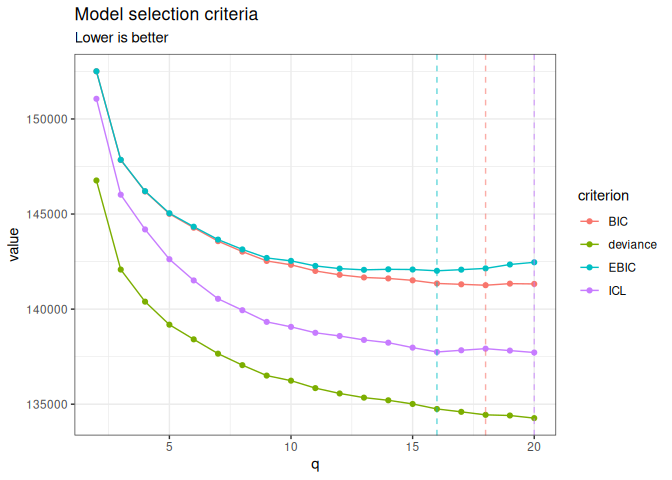

normalblockr: Gaussian graphical models with latent clustering structure for multivariate continuous data
Description
The Normal-Block model1 is a Gaussian graphical model with a latent clustering structure, designed for the multivariate analysis of continuous data: it clusters variables and, building on the graphical lasso, infers a network of statistical dependencies between clusters rather than between individual variables. This package implements an efficient (variational) EM algorithm to fit it, accompanied by a set of functions for model selection, visualization and diagnostic. See all the dedicated vignettes for a comprehensive introduction.
normalblockr covers the following model variants, all built around the same normal_block()/NormalBlockData interface:
- Known clusters: the grouping of variables is given (e.g. from prior knowledge); only the association network between clusters is estimated, by EM.
- Unknown clusters: the grouping is inferred jointly with everything else by a variational EM, either for a single number of clusters or over a range explored as a collection, with model selection via BIC/EBIC/ICL.
- Sparse (graphical-lasso) network: an penalty2 on the inter-cluster precision matrix, for a single penalty value or a path explored as a collection.
- Zero-inflated extension: an excess-of-zeros layer for data (e.g. abundance/biomass tables) with more exact zeros than a plain Normal model can represent.
Any combination of these is reached through the same normal_block() function: known or unknown clustering, sparse or not, zero-inflated or not are independent choices, not separate model classes to learn.
Since version 0.3.0 the package also fits a second, complementary family, reached with normal_block(..., model = "mean"):
- Mean-block models: variables are clustered by how they respond to the covariates rather than by how they covary. All variables in a cluster share one regression profile, so the mean is with of size instead of . Known or unknown clustering, zero-inflated or not, with the residual covariance taken diagonal (the default), spherical, or full.
The two families answer different questions and generally return different groupings; normal_block_sequential() runs one after the other when both are of interest. See the mean-block vignette.
Installation
Install the released version from CRAN:
install.packages("normalblockr")or the development version from GitHub:
# install.packages("pak")
pak::pak("jchiquet/normalblockr")Illustration
We illustrate the known-/unknown-clusters and sparse variants on brca_rppa3: reverse-phase protein array measurements of 163 proteins across 346 breast cancer tumor samples from The Cancer Genome Atlas, together with each sample’s PAM50 molecular subtype.
library(normalblockr)
data(brca_rppa)
Y <- as.matrix(brca_rppa$expr)
X <- model.matrix(~ 0 + PAM50_SUBTYPE, data = brca_rppa$covariates)
data <- NormalBlockData$new(Y, X)Known clusters
A simple, fully data-driven grouping (hierarchical clustering on the raw expression profiles, with no reference to the Normal-Block model) handed to normal_block() as fixed – only the network between the 6 blocks is estimated.
hc <- brca_rppa$expr |> scale() |> t() |> dist() |> hclust("ward.D2")
group <- cutree(hc, 6) |> normalblockr:::as_indicator()
m_known <- normal_block(data, blocks = group)
m_knownA diagonal normal-block-var model with fixed blocks .
===========================================================================
nb_param q n_edges sparsity loglik deviance BIC ICL EBIC niter
999 6 15 0 -70387.84 140775.7 146616.3 144073.3 146670 14
===========================================================================
* Useful fields
$model_par, $posterior_par / $var_par, $clustering
$loglik, $BIC, $ICL, $objective, $nb_param, $criteria
* Useful S3 methods
print(), summary(), plot(), coef(), sigma(), fitted(), predict() Unknown number of clusters
Leave the clustering for the model to infer, over a range of candidate cluster counts explored as a collection, then select by ICL.
m_unknown <- normal_block(data, blocks = 2:20)Fitting a diagonal normal-block-var model with unknown q
number of blocks = 2
number of blocks = 3
number of blocks = 4
number of blocks = 5
number of blocks = 6
number of blocks = 7
number of blocks = 8
number of blocks = 9
number of blocks = 10
number of blocks = 11
number of blocks = 12
number of blocks = 13
number of blocks = 14
number of blocks = 15
number of blocks = 16
number of blocks = 17
number of blocks = 18
number of blocks = 19
number of blocks = 20
DONE
m_unknown$refine(verbose = FALSE)
m_unknown$plot(c("deviance", "BIC", "ICL", "EBIC"))
m_unknown$get_best_model("EBIC")A diagonal normal-block-var model with 16 unknown blocks .
===========================================================================
nb_param q n_edges sparsity loglik deviance BIC ICL EBIC
1129 16 120 0 -67374.79 134749.6 141350.2 137746.6 142015.6
niter
32
===========================================================================
* Useful fields
$model_par, $posterior_par / $var_par, $clustering
$loglik, $BIC, $ICL, $objective, $nb_param, $criteria
* Useful S3 methods
print(), summary(), plot(), coef(), sigma(), fitted(), predict() Sparse network
Treating a clustering as fixed (known, or selected above), explore a path of graphical-lasso penalties on the inter-cluster network and select by BIC. Unlike the dense, unpenalized network, this is the one actually worth visualizing.
m_sparse <- normal_block(data, blocks = group, sparsity = TRUE)Fitting a Collection of diagonal normal-block-var models with fixed blocks, with different sparsity penalties.
penalty = 0.2565018
penalty = 0.2188391
penalty = 0.1867065
penalty = 0.1592919
penalty = 0.1359028
penalty = 0.1159479
penalty = 0.098923
penalty = 0.08439792
penalty = 0.07200559
penalty = 0.06143286
penalty = 0.05241254
penalty = 0.04471669
penalty = 0.03815085
penalty = 0.03254907
penalty = 0.02776982
penalty = 0.02369232
penalty = 0.02021353
penalty = 0.01724553
penalty = 0.01471333
penalty = 0.01255294
penalty = 0.01070977
penalty = 0.009137229
penalty = 0.00779559
penalty = 0.006650947
penalty = 0.005674374
penalty = 0.004841193
penalty = 0.004130351
penalty = 0.003523882
penalty = 0.003006463
penalty = 0.002565018
DONE
sp_best <- m_sparse$get_best_model("BIC")
sp_best$plot_network()
Zero-inflated data
For data with an excess of exact zeros beyond what a plain Normal model would represent (e.g. abundance/biomass tables), zero_inflation = TRUE adds a per-variable excess-of-zero layer. Illustrated on onema4: total biomass of 46 fish species across 399 French stream electrofishing stations, where seven in ten entries are exact zeros.
data(onema)
X_zi <- model.matrix(~ 1 + temperature_med, data = onema$covariates)
Y_zi <- log(1 + onema$biomass)
data_zi <- NormalBlockData$new(Y_zi, X_zi)
m_zi <- normal_block(data_zi, blocks = 2:8, zero_inflation = TRUE)Fitting a diagonal normal-block-var model with unknown q
number of blocks = 2
number of blocks = 3
number of blocks = 4
number of blocks = 5
number of blocks = 6
number of blocks = 7
number of blocks = 8
DONE
m_zi$get_best_model("ICL")A zero-inflated diagonal normal-block-var model with 6 unknown blocks .
===========================================================================
nb_param q n_edges sparsity loglik deviance BIC ICL EBIC
210 6 15 0 -13519.35 27038.71 28296.39 27090.47 28350.14
niter
20
===========================================================================
* Useful fields
$model_par, $posterior_par / $var_par, $clustering
$loglik, $BIC, $ICL, $objective, $nb_param, $criteria
* Useful S3 methods
print(), summary(), plot(), coef(), sigma(), fitted(), predict() Learning more
-
normal-block(vignette("normal-block")): a general introduction on simulated data – known/unknown clusters, sparsity, zero-inflation. -
zero-inflated-normal-block(vignette("zero-inflated-normal-block")): a full worked example ononema, with the math behind the zero-inflation extension. -
breast-cancer-proteomics(vignette("breast-cancer-proteomics")): a full worked example onbrca_rppa– known vs. inferred clustering, model selection, the post-hocrefine()step, sparsifying the selected network. -
mean-block-breast-cancer(vignette("mean-block-breast-cancer")): the mean-block family onbrca_rppa– clustering proteins by their subtype signature, choosing the shape of the residual covariance, sparsifying it. -
inst/normal_block_models.qmdin the package sources: a reference card in two parts, the models (both families, with their criteria and E/M or VE/M updates) and the implementation notes.
Note on the use of generative AI
The models implemented here – their definition and every algebraic derivation – were worked out by Jeanne Tous and Nestor Ngalala Manguitini and their advisor, Julien Chiquet, over a PhD thesis and a Master’s research internship respectively, who also wrote the first working versions of the code, its object-oriented architecture, and the first simulation studies. Generative AI (Claude Sonnet and Claude Opus, Anthropic) was used afterwards to improve the documentation, produce synthesis material, and audit, test and improve the code – in particular to port several algorithmic components to C++, including the graphical lasso solver, whose original R-callback implementation caused intermittent memory crashes. See the technical report for details.